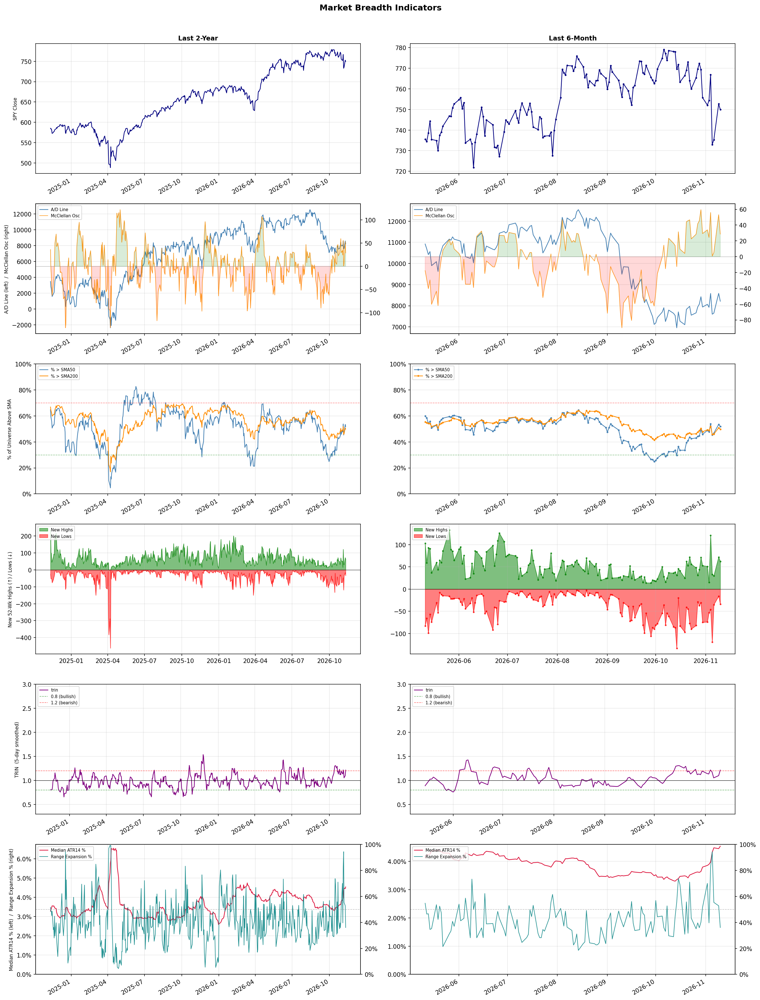

A daily market breadth and sector rotation report for active investors
| Item | Read |
|---|---|
| Regime | Selective Risk-On |
| Risk posture | Selective |
| Universe | 1,312 stocks tracked · 62 new 52-week highs · 30 active swing setups |
| Breadth | 51.8% of tracked stocks are above SMA50 — neutral range, new highs exceed new lows (62 vs 34) |
| Leadership | Advertising Agencies, Apparel Manufacturing, and Health Information Services |
| Weakest groups | Uranium, Other Industrial Metals & Mining, and Electrical Equipment & Parts |
Use this report to prioritize research and chart review; validate entries, stops, liquidity, earnings, and risk before acting.
| Item | Read |
|---|---|
| Primary read | Selective Risk-On regime with Selective risk posture. |
| Research queue | STGW, APP, TTD, OMC, EVC |
| Leadership focus | Advertising Agencies, Apparel Manufacturing, and Health Information Services |
| Caution list | Uranium, Other Industrial Metals & Mining, and Electrical Equipment & Parts |
| Review prompt | Check extension risk, chart location, fundamentals, valuation, and earnings before using any research row. |
| Item | Read |
|---|---|
| Primary read | 0 active risk warnings; use screen output as watchlist input only. |
| Bullish screens | OMC, FIGS, HNGE, COTY, PG |
| Bearish screens | none |
| Alerts / levels | Automated trigger, stop, ATR, liquidity, reward/risk, and event-risk levels are pending future enrichment. |
| Review prompt | Open the linked chart, define trigger and invalidation, then check liquidity and event risk independently. |
Risk Posture: Selective — screen backdrop supports selective research in leading industries
Metric context: McClellan below -50 = elevated selling pressure; below -100 = washout territory. Range Expansion = share of stocks with daily range above their 20-day average. Signal Density = share of tracked names appearing in signal screens.
| Breadth Date | % > SMA50 | % > SMA200 | New Highs | New Lows | McClellan | Median Range | Avg Range | Median ATR14 | Range Expansion | Signal Density |
|---|---|---|---|---|---|---|---|---|---|---|
| 2026-11-10 | 51.8% | 49.8% | 62 | 34 | 28.6 | 3.5% | 4.4% | 4.5% | 36.1% | 0.8% |

Prior comparison date: November 9, 2026
| Metric | Prior | Current | Change |
|---|---|---|---|
| Regime | Selective Risk-On | Selective Risk-On | unchanged |
| Risk Posture | Selective | Selective | unchanged |
| % > SMA50 | 53.4% | 51.8% | -1.6 pts |
| % > SMA200 | 50.8% | 49.8% | -1.0 pts |
| New Highs | 71 | 62 | -9 |
| New Lows | 17 | 34 | -17 |
Top-10 industries entering: Beverages - Non-Alcoholic. Top-10 industries leaving: Restaurants. New multi-signal long setups: APLE, BEN, CCEP, CNK, CNP, COTY, DD, DIS, FIGS, FWONK. New multi-signal short setups: none.
| Status | Tickers | Read |
|---|---|---|
| Added | APLE, BEN, CCEP, CNK, CNP, COTY, DD, DIS | New technical screen matches vs prior report. |
| Removed | ADPT, AER, ALKS, APP, ARHS, AZTA, BLMN, BMY | No longer present in today's technical screen matches. |
| Still Active | AHR | Appeared in both current and prior reports. |
| Promoted | none | Model Screen Score improved by at least 15 points. |
| Downgraded | none | Model Screen Score declined by at least 15 points. |
| Direction | Industry | ETF | Prior Rank | Current Rank | Days | Rank Change |
|---|---|---|---|---|---|---|
| Rose | Leisure | N/A | 78 | 16 | 42 | +62 |
| Rose | Restaurants | N/A | 71 | 11 | 42 | +60 |
| Rose | Airlines | N/A | 72 | 13 | 14 | +59 |
| Rose | Advertising Agencies | N/A | 56 | 1 | 35 | +55 |
| Rose | Packaging & Containers | N/A | 80 | 31 | 42 | +49 |
Bull: The rising relative strength of the Leisure industry can be attributed to a robust recovery in travel and tourism as consumer demand rebounds post-pandemic, highlighted by articles emphasizing growth opportunities in travel and tourism stocks for 2026. Additionally, the focus on innovative leisure experiences, as noted in the AI disruption trade, suggests that companies are adapting to changing consumer preferences and leveraging technology to enhance offerings, positioning them for sustained growth despite broader industry pressures.
Bear: While the rising relative strength of the Leisure industry may suggest a recovery, it is crucial to consider that this rebound is occurring amid significant economic uncertainties, including inflationary pressures and potential recessions that could dampen consumer spending. Furthermore, the emphasis on AI and innovation may not translate into immediate benefits for all companies, as many may struggle to adapt quickly or effectively, leading to a potential widening gap between winners and losers in the sector. Thus, the optimism surrounding growth opportunities could be overly optimistic in light of these persistent challenges.
Verdict: The Leisure industry's rising relative strength is primarily driven by a robust recovery in travel and tourism as consumer demand rebounds post-pandemic, coupled with companies leveraging innovation and technology to enhance their offerings. However, investors should remain cautious of the significant economic uncertainties, including inflation and potential recessions, which could hinder consumer spending and create disparities among companies in the sector. It is advisable to focus on firms that demonstrate resilience and adaptability in this evolving landscape.
Sources: Google News
Bull: The rising relative strength of the restaurant industry can be attributed to a combination of resilient consumer spending and strategic positioning by key players, as indicated by headlines discussing the potential of top restaurant ETFs and the performance of major companies like Darden Restaurants. Despite short-term volatility, as seen with Cheesecake Factory's recent drop, analysts are identifying opportunities within the sector, suggesting that robust fundamentals and a recovering economy are driving optimism for long-term growth in restaurant stocks.
Bear: While the rising relative strength of the restaurant industry may seem promising, it is crucial to consider the broader economic context, including potential inflationary pressures and rising labor costs that could erode profit margins. Additionally, the recent sector-wide selling, highlighted by Cheesecake Factory's significant drop, indicates underlying vulnerabilities that could signal a shift in consumer sentiment, potentially leading to a slowdown in discretionary spending. This volatility raises concerns about the sustainability of growth in the restaurant sector, especially if economic conditions worsen.
Verdict: The restaurant industry's rising relative strength is primarily driven by resilient consumer spending and strategic positioning by major players, suggesting a recovery in discretionary spending as the economy improves. However, key risks include inflationary pressures and rising labor costs, which could squeeze profit margins and lead to a potential slowdown in consumer sentiment if economic conditions deteriorate. Investors should monitor these macroeconomic factors closely while considering opportunities in well-positioned companies within the sector.
Sources: Google News
Bull: The airline industry is experiencing a rise in relative strength primarily due to optimistic market sentiment and upward revisions in earnings targets from major analysts, as highlighted by Goldman Sachs and TD Cowen's increased targets for key players like Delta and United Airlines. Despite some recent earnings disappointments, the overall demand for air travel remains robust, supported by a rebound in consumer spending and travel activity, which is likely driving investor confidence and stock performance in the sector. Additionally, the focus on navigating fuel volatility indicates that airlines are adapting to challenges, further enhancing their long-term growth prospects.
Bear: While the bullish case highlights optimistic market sentiment and upward earnings revisions, it overlooks the significant headwinds facing the airline industry, such as rising fuel costs and potential economic downturns that could dampen consumer spending. Furthermore, the recent profit warnings from Delta Airlines indicate that not all players are benefiting equally, and the overall demand for air travel may be more fragile than suggested, particularly if inflationary pressures continue to impact disposable income. This suggests that the current stock performance may be more speculative than fundamentally sound, making the sector vulnerable to corrections.
Verdict: The airline industry's rising strength is primarily driven by robust demand for air travel, bolstered by increased consumer spending and optimistic earnings revisions from major analysts, which have boosted investor confidence. However, a key risk lies in the potential impact of rising fuel costs and economic downturns, which could dampen consumer spending and expose the sector to vulnerabilities, making it essential for investors to closely monitor economic indicators and inflation trends before making commitments.
Sources: Google News
Bull: The Advertising Agencies sector is experiencing a rising relative strength primarily due to its strategic adaptation to artificial intelligence, as highlighted by multiple sources indicating that ad agency stocks are poised to leverage AI disruption to enhance efficiency and targeting capabilities. Additionally, the positive outlook for key players like Publicis and the integration efforts by Omnicom and IPG suggest a consolidation trend that could lead to improved margins and competitive advantages, further driving investor confidence in the sector. This bullish sentiment is reflected in recent articles emphasizing the potential of advertising technology stocks, positioning the industry favorably for growth through 2026 and beyond.
Bear: While the advertising agencies sector may currently exhibit rising relative strength, this could be misleading as it often reflects short-term market sentiment rather than sustainable growth. The integration of AI, while promising, may also lead to significant job losses and reduced creativity, which could alienate clients and consumers alike. Furthermore, the consolidation among major players like Publicis, WPP, and Omnicom may create inefficiencies and stifle competition, ultimately hindering innovation and adaptability in a rapidly evolving digital landscape.
Verdict: The advertising agencies sector is experiencing a rise due to its strategic embrace of artificial intelligence, which enhances efficiency and targeting capabilities, thereby attracting investor confidence. However, a key risk lies in the potential job losses and reduced creativity associated with AI integration, as well as the possibility that consolidation among major players could stifle competition and innovation, ultimately undermining long-term growth prospects. Investors should closely monitor these dynamics to assess the sustainability of the sector's upward trajectory.
Sources: Google News
Bull: The Packaging & Containers industry is experiencing a rise in relative strength primarily due to significant price increases in containerboard, as highlighted by PCA's unprecedented $140/ton hike, which indicates strong demand and pricing power amidst supply constraints. Additionally, despite broader industry pressures, analysts are identifying specific stocks within the sector that remain resilient and worth watching, suggesting a selective bullish sentiment that is likely driven by ongoing trends in e-commerce and sustainable packaging solutions. This positive outlook is further supported by the overall resilience of the sector compared to others, as indicated by the rising relative strength trend.
Bear: While the recent price increases in containerboard may suggest strong demand, they could also be indicative of underlying supply chain issues and inflationary pressures that may not be sustainable in the long term. Furthermore, the broader industry pressures highlighted in recent headlines, such as losses since the onset of the Iran War, could signal a more significant downturn that outweighs the selective resilience of certain stocks, potentially leading to a correction in the sector as economic conditions evolve. Additionally, the focus on sustainable packaging solutions may not be enough to offset the growing competition and cost challenges facing traditional packaging companies.
Verdict: The Packaging & Containers industry is experiencing a rise in relative strength due to significant price increases in containerboard driven by strong demand and supply constraints, particularly in the context of e-commerce growth and a shift towards sustainable packaging solutions. However, the key risk lies in potential long-term sustainability of these price increases, which may be undermined by ongoing supply chain issues, inflationary pressures, and broader economic downturns that could impact overall demand and profitability in the sector. Investors should remain vigilant and consider selective exposure to resilient stocks while monitoring macroeconomic indicators that could signal a correction.
Sources: Google News
| Direction | Industry | ETF | Prior Rank | Current Rank | Days | Rank Change |
|---|---|---|---|---|---|---|
| Fell | Computer Hardware | XLK | 3 | 84 | 42 | -81 |
| Fell | Semiconductor Equipment & Materials | SOXX | 4 | 83 | 42 | -79 |
| Fell | Electronic Components | XLK | 4 | 78 | 35 | -74 |
| Fell | Semiconductors | SOXX | 6 | 79 | 35 | -73 |
| Fell | Copper | COPX | 3 | 76 | 28 | -73 |
Bear: While the bull analyst attributes the sector's weakness to a shift in sentiment towards AI hardware, the broader context reveals significant underlying challenges that could persist in the Computer Hardware industry. The consistent sell-off by hedge funds, as reported by Reuters, suggests deeper concerns regarding the sustainability of growth in hardware investments, particularly as companies grapple with rising costs, supply chain disruptions, and increasing competition from software and service-oriented tech sectors. Furthermore, the focus on alternative sectors, as highlighted by multiple sources, indicates a potential long-term decline in investor confidence in hardware, raising questions about the viability of recovery in this space.
Bull: The relative weakness in the Computer Hardware sector can be attributed to a shift in investor sentiment away from AI hardware stocks, as highlighted by the Business Insider article discussing a CIO's recommendation to divest from this segment. Additionally, the ongoing trend of hedge funds selling off chip stocks, as reported by Reuters, indicates a broader market retreat from hardware investments amid concerns over valuation and profitability in a rapidly evolving tech landscape. This has created a perception that other sectors may offer better growth opportunities, as suggested by Morningstar and U.S. News highlighting alternative tech stocks to consider.
Verdict: The decline in the Computer Hardware sector is primarily driven by a shift in investor sentiment away from AI hardware stocks and broader concerns over valuation and profitability, as indicated by hedge fund sell-offs. The key risk from the bear case lies in the persistent challenges of rising costs, supply chain disruptions, and intensified competition from software and service-oriented sectors, which may hinder any potential recovery in hardware investments. Investors should closely monitor these dynamics and consider diversifying into more resilient tech sectors to mitigate exposure to hardware volatility.
Sources: Google News
Bear: While the bull analyst highlights resilience and optimism from certain companies, the broader semiconductor equipment sector is grappling with significant headwinds, including ongoing supply chain disruptions and a potential slowdown in demand as inventory levels remain high. The recent selloff in major players like Applied Materials and Lam Research, coupled with a falling relative-strength trend, suggests that investor confidence is waning and that the optimistic forecasts may be overly ambitious given the current economic landscape and geopolitical tensions affecting the semiconductor supply chain. This uncertainty could lead to further declines in stock performance and profitability in the near term.
Bull: The Semiconductor Equipment & Materials sector is experiencing a decline in relative strength primarily due to uncertainty surrounding the chip equipment outlook, as highlighted by the bearish sentiment in recent headlines like those from Yahoo Finance and 24/7 Wall St. This uncertainty is compounded by broader market concerns about demand fluctuations and supply chain challenges, even as some companies, like Applied Materials, show resilience and optimistic forecasts for the chip sector's recovery, as noted in the MarketWatch article. The mixed signals from earnings reports and market reactions contribute to the overall volatility and relative weakness in the industry.
Verdict: The semiconductor equipment and materials sector is experiencing a decline primarily due to heightened uncertainty around demand and persistent supply chain disruptions, which have led to elevated inventory levels and a selloff in major companies like Applied Materials and Lam Research. The key risk highlighted by the bear case is that optimistic forecasts may be overly ambitious in light of these challenges, potentially resulting in further declines in stock performance and profitability. Investors should closely monitor inventory levels and geopolitical developments that could exacerbate supply chain issues before making investment decisions in this sector.
Sources: Google News
Bear: While the upgrade by TISCO to an Overweight rating may suggest optimism, it overlooks the broader macroeconomic challenges that continue to plague the electronic components sector, such as supply chain disruptions, rising material costs, and potential downturns in consumer demand. The mixed earnings reports from key players like Knowles and Coherent indicate a lack of consistent growth and profitability, which raises concerns about the sector's ability to recover in the near term. Moreover, the falling relative strength trend signals that investor confidence is waning, suggesting that any potential turnaround may be more illusory than real.
Bull: The relative weakness of the electronic components sector compared to other industries may be attributed to mixed earnings reports, as highlighted by the Q3 earnings roundups for companies like Knowles and Coherent, which may have underperformed expectations. Additionally, the sector's recent upgrade by TISCO to an Overweight rating suggests a potential turnaround; however, the overall sentiment may still be cautious due to broader macroeconomic factors affecting demand, despite positive signals from specific companies like Plexus. This combination of mixed earnings and cautious investor sentiment could explain the current relative decline in strength.
Verdict: The electronic components sector is experiencing a downturn primarily due to mixed earnings reports from key players, signaling inconsistent growth and profitability amid ongoing macroeconomic challenges such as supply chain disruptions and rising material costs. While the recent upgrade by TISCO to an Overweight rating may hint at potential recovery, the bear case highlights the risk of waning investor confidence and a lack of demand, suggesting that any optimism could be premature. Investors should approach this sector cautiously, keeping a close eye on broader economic indicators and company-specific performance metrics before making significant commitments.
Sources: Google News
Bear: While the bullish case emphasizes potential long-term growth and buying opportunities, the current relative strength trend and significant stock declines among key players like Qualcomm and Micron signal deeper issues within the semiconductor sector that cannot be overlooked. The impending $57 billion storm suggests not just temporary disruptions, but potentially systemic challenges such as oversupply, weakening demand, and increased regulatory scrutiny that could stifle profitability and growth for the foreseeable future, making the optimistic outlook overly optimistic in the current environment.
Bull: The recent decline in the relative strength of the semiconductor sector can be attributed to a combination of negative sentiment and macroeconomic pressures, as highlighted by headlines indicating significant stock declines for major players like Qualcomm and Micron, which have led the sector lower. Additionally, the looming threat of a "storm" worth $57 billion, as mentioned in Seeking Alpha, suggests potential supply chain disruptions or regulatory challenges that could impact earnings, causing investors to exercise caution. However, despite these short-term headwinds, analysts like those at Morgan Stanley are advocating for buying opportunities, indicating a belief in the long-term growth potential of the sector, particularly for companies like Nvidia and Broadcom.
Verdict: The semiconductor industry is currently experiencing a downturn driven by negative sentiment and macroeconomic pressures, with significant stock declines among major players like Qualcomm and Micron highlighting deeper systemic issues such as oversupply and weakening demand. The looming $57 billion threat raises concerns about potential supply chain disruptions and increased regulatory scrutiny, posing a key risk to profitability and growth. Investors should approach the sector with caution, weighing potential long-term opportunities against the immediate challenges that could hinder recovery.
Sources: Google News
Bear: While the bull analyst attributes the recent decline in copper's relative strength to tariff uncertainties and undervalued mining stocks, it's crucial to recognize that the broader economic landscape is shifting. Concerns over a potential global economic slowdown, exacerbated by rising interest rates and inflationary pressures, could significantly dampen demand for copper, particularly in construction and manufacturing sectors. Moreover, the optimism from analysts may be overly reliant on speculative forecasts rather than addressing the fundamental risks that could continue to weigh on copper prices and mining stocks.
Bull: Copper's recent decline in relative strength can be attributed to heightened uncertainty surrounding tariffs, as indicated by the headline from 24/7 Wall St. that mentions a reversal of a record rally due to tariff doubts. This uncertainty has led to significant sell-offs in major copper stocks like Freeport-McMoRan and Teck Resources, overshadowing the underlying fundamentals that suggest copper mining stocks are undervalued, as highlighted by Scotiabank's analysis. Additionally, the broader market sentiment appears to be cautious, despite bullish forecasts from sources like The Motley Fool and UBS, which could be contributing to the sector's relative weakness compared to others.
Verdict: The recent decline in copper prices is primarily driven by heightened uncertainty surrounding tariffs and broader economic concerns, including the potential for a global slowdown exacerbated by rising interest rates and inflation. While there may be undervalued opportunities in copper mining stocks, investors should remain cautious of the fundamental risks that could suppress demand in key sectors like construction and manufacturing. It is advisable to closely monitor economic indicators and tariff developments before making investment decisions in this space.
Sources: Google News
| Industry | Rank | ETF | 7d | 14d | 28d | 42d | Chg 42d | Size | 20D | 60D | Composite | Active Setups |
|---|---|---|---|---|---|---|---|---|---|---|---|---|
| Advertising Agencies | 1 | N/A | 40 | 48 | 44 | 40 | +39 | 7 | 23.1% | 14.2% | 0.954 | 0 |
| Apparel Manufacturing | 2 | N/A | 4 | 7 | 14 | 43 | +41 | 6 | 17.9% | 21.9% | 0.953 | 0 |
| Health Information Services | 3 | N/A | 2 | 5 | 2 | 5 | +2 | 12 | 14.3% | 33.9% | 0.948 | 0 |
| Specialty Retail | 4 | XRT | 6 | 13 | 19 | 21 | +17 | 13 | 22.1% | 18.8% | 0.946 | 0 |
| Household & Personal Products | 5 | XLP | 7 | 4 | 8 | 25 | +20 | 11 | 13.1% | 21.9% | 0.915 | 0 |
| Discount Stores | 6 | XRT | 3 | 19 | 5 | 15 | +9 | 7 | 11.4% | 13.8% | 0.905 | 0 |
| Medical Care Facilities | 7 | IHF | 11 | 6 | 16 | 14 | +7 | 9 | 14.9% | 16.5% | 0.891 | 0 |
| REIT - Hotel & Motel | 8 | XLRE | 1 | 2 | 12 | 13 | +5 | 9 | 10.9% | 14.5% | 0.884 | 0 |
| Drug Manufacturers - General | 9 | IHE | 8 | 17 | 27 | 11 | +2 | 14 | 12.0% | 9.3% | 0.870 | 0 |
| Beverages - Non-Alcoholic | 10 | XLP | 10 | 24 | 33 | 58 | +48 | 7 | 13.8% | 8.8% | 0.865 | 0 |
Rank columns (7d–42d) show the industry's rank that many trading days ago — lower is stronger. Chg 42d = rank change vs 42 trading days ago — positive means the industry moved up. 20D and 60D are the mean stock return within the industry over that period. Active Setups: count of today's swing-trade candidates from this industry appearing across all signal screens.
| Industry | Rank | ETF | 7d | 14d | 28d | 42d | Chg 42d | Size | 20D | 60D | Composite | Active Setups |
|---|---|---|---|---|---|---|---|---|---|---|---|---|
| Uranium | 87 | URA | 87 | 87 | 85 | 83 | -4 | 6 | -14.3% | -36.6% | 0.040 | 0 |
| Other Industrial Metals & Mining | 86 | N/A | 86 | 85 | 81 | 74 | -12 | 21 | -15.3% | -34.2% | 0.058 | 0 |
| Electrical Equipment & Parts | 85 | XLI | 85 | 86 | 78 | 46 | -39 | 12 | -15.4% | -35.0% | 0.093 | 0 |
| Computer Hardware | 84 | XLK | 82 | 60 | 32 | 3 | -81 | 15 | -21.8% | -32.5% | 0.099 | 0 |
| Semiconductor Equipment & Materials | 83 | SOXX | 84 | 76 | 22 | 4 | -79 | 17 | -20.9% | -33.3% | 0.103 | 0 |
| Oil & Gas Equipment & Services | 82 | XES | 70 | 46 | 65 | 52 | -30 | 17 | -15.0% | -24.0% | 0.113 | 0 |
| Communication Equipment | 81 | IYZ | 77 | 55 | 31 | 28 | -53 | 15 | -18.3% | -27.3% | 0.132 | 0 |
| Auto Parts | 80 | N/A | 83 | 80 | 73 | 54 | -26 | 19 | -10.6% | -24.2% | 0.133 | 0 |
| Semiconductors | 79 | SOXX | 76 | 56 | 20 | 7 | -72 | 37 | -18.2% | -24.7% | 0.134 | 0 |
| Electronic Components | 78 | XLK | 74 | 73 | 21 | 8 | -70 | 10 | -16.4% | -27.2% | 0.154 | 0 |
Rank columns (7d–42d) show the industry's rank that many trading days ago — lower is stronger. Chg 42d = rank change vs 42 trading days ago — positive means the industry moved up. 20D and 60D are the mean stock return within the industry over that period. Active Setups: count of today's swing-trade candidates from this industry appearing across all signal screens.
These are research candidates from top-ranked stocks, capped at five names per industry to avoid over-concentration. Returns shown (60D, 120D, 250D) are historical — they reflect where prices have already moved, not forward expectations. Extension Risk flags names that may require extra patience or a better entry point. They are not buy signals.
Chart: TV = TradingView chart (opens in browser); PDF = local chart file (if downloaded).
| Ticker | Name | Industry | Industry Rank | Market Cap | 60D Hist | 120D Hist | 250D Hist | Extension Risk | Research Reason | Chart |
|---|---|---|---|---|---|---|---|---|---|---|
| STGW | Stagwell | Advertising Agencies | 1 | N/A | 29.7% | 81.4% | 124.7% | Constructive | Top-ranked in industry | TV |
| APP | Applovin | Advertising Agencies | 1 | N/A | 26.8% | -18.0% | -33.5% | Constructive | Top-ranked in industry | TV |
| TTD | The Trade Desk | Advertising Agencies | 1 | N/A | 15.1% | -26.6% | -65.1% | Constructive | Top-ranked in industry | TV |
| OMC | Omnicom Group | Advertising Agencies | 1 | N/A | 5.0% | 26.2% | 25.2% | Constructive | Top-ranked in industry | TV |
| EVC | Entravision Communications | Advertising Agencies | 1 | N/A | 3.1% | 12.3% | 216.3% | Constructive | Top-ranked in industry | TV |
| FIGS | FIGS Inc | Apparel Manufacturing | 2 | N/A | 56.4% | 84.0% | 132.3% | Extended | Top-ranked in industry; extended | TV |
| VFC | VF Corp | Apparel Manufacturing | 2 | N/A | 44.2% | 29.5% | 43.1% | Constructive | Top-ranked in industry | TV |
| PVH | PVH Corp | Apparel Manufacturing | 2 | N/A | 19.0% | 9.9% | 21.8% | Constructive | Top-ranked in industry | TV |
| LEVI | Levi Strauss & Co. | Apparel Manufacturing | 2 | N/A | 8.9% | 15.9% | 17.2% | Constructive | Top-ranked in industry | TV |
| ZGN | Ermenegildo Zegna NV | Apparel Manufacturing | 2 | N/A | 6.8% | 7.8% | 41.5% | Constructive | Top-ranked in industry | TV |
| SDGR | Schrodinger | Health Information Services | 3 | N/A | 86.3% | 163.1% | 77.1% | Extended | Top-ranked in industry; extended | TV |
| TEM | Tempus AI | Health Information Services | 3 | N/A | 56.0% | 75.5% | 12.5% | Extended | Top-ranked in industry; extended | TV |
| CERT | Certara | Health Information Services | 3 | N/A | 51.6% | 159.6% | 41.3% | Extended | Top-ranked in industry; extended | TV |
| HNGE | Hinge Health | Health Information Services | 3 | N/A | 40.2% | 125.1% | 178.1% | Extended | Top-ranked in industry; extended | TV |
| TDOC | Teladoc Health | Health Information Services | 3 | N/A | 36.7% | 38.0% | 18.3% | Constructive | Top-ranked in industry | TV |
| ARHS | Arhaus | Specialty Retail | 4 | N/A | 56.2% | 148.6% | 63.9% | Extended | Top-ranked in industry; extended | TV |
| ASO | Academy | Specialty Retail | 4 | N/A | 53.1% | 39.9% | 61.8% | Extended | Top-ranked in industry; extended | TV |
| SBH | Sally Beauty Holdings | Specialty Retail | 4 | N/A | 26.5% | 63.3% | 41.0% | Constructive | Top-ranked in industry | TV |
| EVGO | EVgo Inc | Specialty Retail | 4 | N/A | 17.4% | -1.1% | -45.5% | Constructive | Top-ranked in industry | TV |
| WOOF | Petco Health and Wellness | Specialty Retail | 4 | N/A | 8.5% | 16.7% | -5.5% | Constructive | Top-ranked in industry | TV |
These are technical screen matches from existing signal files. They are not trade recommendations. Trigger, stop, ATR, liquidity, reward/risk, and event risk still require separate validation until those inputs are available.
Model Screen Score is weighted by signal count, industry rank, freshness, and setup type. It is not a probability of profit, expected return, or suitability rating. Industry cap: max 3 candidates per industry.
Signal glossary: Momentum Pullback = stock in an uptrend that has pulled back 10–30% and shows re-entry conditions. MA Compression = short- and long-term moving averages converging, often preceding a directional move. Three-Day Up/Down = three consecutive closes in the same direction. New 52Wk High/Low = price reached a new annual extreme.
Chart: TV = TradingView chart (opens in browser); PDF = local chart file (if downloaded).
| Ticker | Industry | Setups | Close | Industry Rank | Signal Count | Model Screen Score | Reason | Chart |
|---|---|---|---|---|---|---|---|---|
| OMC | Advertising Agencies | New 52Wk High; Three-Day Up | 88.84 | 1 | 2 | 100 | Multi-signal; top industry breakout | TV |
| FIGS | Apparel Manufacturing | New 52Wk High; Three-Day Up | 22.39 | 2 | 2 | 100 | Multi-signal; top industry breakout | TV |
| HNGE | Health Information Services | New 52Wk High; Three-Day Up | 123.23 | 3 | 2 | 100 | Multi-signal; top industry breakout | TV |
| COTY | Household & Personal Products | New 52Wk High; Three-Day Up | 4.33 | 5 | 2 | 93 | Multi-signal; top industry breakout | TV |
| PG | Household & Personal Products | New 52Wk High; Three-Day Up | 168.66 | 5 | 2 | 93 | Multi-signal; top industry breakout | TV |
| APLE | REIT - Hotel & Motel | New 52Wk High; Three-Day Up | 20.16 | 8 | 2 | 85 | Multi-signal; top industry breakout | TV |
| INN | REIT - Hotel & Motel | New 52Wk High; Three-Day Up | 7.44 | 8 | 2 | 85 | Multi-signal; top industry breakout | TV |
| PEB | REIT - Hotel & Motel | New 52Wk High; Three-Day Up | 22.22 | 8 | 2 | 85 | Multi-signal; top industry breakout | TV |
| LLY | Drug Manufacturers - General | New 52Wk High; Three-Day Up | 1432.29 | 9 | 2 | 85 | Multi-signal; top industry breakout | TV |
| CCEP | Beverages - Non-Alcoholic | New 52Wk High; Three-Day Up | 117.55 | 10 | 2 | 85 | Multi-signal; top industry breakout | TV |
| KDP | Beverages - Non-Alcoholic | New 52Wk High; Three-Day Up | 37.59 | 10 | 2 | 85 | Multi-signal; top industry breakout | TV |
| ICE | Financial Data & Stock Exchanges | New 52Wk High; Three-Day Up | 176.36 | 17 | 2 | 77 | Multi-signal; new-high strength | TV |
| NDAQ | Financial Data & Stock Exchanges | New 52Wk High; Three-Day Up | 110.02 | 17 | 2 | 77 | Multi-signal; new-high strength | TV |
| VTRS | Drug Manufacturers - Specialty & Generic | New 52Wk High; Three-Day Up | 20.85 | 18 | 2 | 77 | Multi-signal; new-high strength | TV |
| PRCH | Insurance - Property & Casualty | New 52Wk High; Three-Day Up | 21.95 | 20 | 2 | 77 | Multi-signal; new-high strength | TV |
| PGNY | Healthcare Plans | New 52Wk High; Three-Day Up | 36.43 | 21 | 2 | 77 | Multi-signal; new-high strength | TV |
| SPG | REIT - Retail | New 52Wk High; Three-Day Up | 234.48 | 23 | 2 | 77 | Multi-signal; new-high strength | TV |
| GO | Grocery Stores | New 52Wk High; Three-Day Up | 14.02 | 24 | 2 | 77 | Multi-signal; new-high strength | TV |
| CNK | Entertainment | New 52Wk High; Three-Day Up | 41.18 | 30 | 2 | 70 | Multi-signal; new-high strength | TV |
| DIS | Entertainment | New 52Wk High; Three-Day Up | 119.21 | 30 | 2 | 70 | Multi-signal; new-high strength | TV |
| FWONK | Entertainment | New 52Wk High; Three-Day Up | 108.94 | 30 | 2 | 70 | Multi-signal; new-high strength | TV |
| BEN | Asset Management | New 52Wk High; Three-Day Up | 36.29 | 36 | 2 | 70 | Multi-signal; new-high strength | TV |
| GPN | Specialty Business Services | New 52Wk High; Three-Day Up | 101.59 | 37 | 2 | 70 | Multi-signal; new-high strength | TV |
| DD | Specialty Chemicals | New 52Wk High; Three-Day Up | 156.88 | 39 | 2 | 70 | Multi-signal; new-high strength | TV |
| AHR | REIT - Healthcare Facilities | New 52Wk High; Three-Day Up | 59.39 | 40 | 2 | 70 | Multi-signal; new-high strength | TV |
| CNP | Utilities - Regulated Electric | MA Compression; Three-Day Up | 41.24 | 27 | 2 | 65 | Multi-signal; compression setup | TV |
| RJF | Asset Management | MA Compression; Three-Day Up | 168.11 | 36 | 2 | 65 | Multi-signal; compression setup | TV |
| PTC | Software - Application | New 52Wk High; Three-Day Up | 196.55 | 42 | 2 | 65 | Multi-signal; new-high strength | TV |
| REPL | Biotechnology | New 52Wk High; Three-Day Up | 23.28 | 44 | 2 | 65 | Multi-signal; new-high strength | TV |
| RPRX | Biotechnology | New 52Wk High; Three-Day Up | 69.45 | 44 | 2 | 65 | Multi-signal; new-high strength | TV |
How To Use This Report
| Use | Purpose |
|---|---|
| Market map | Start with breadth, regime, risk warnings, and what changed since the prior report. |
| Industry scan | Use leading, deteriorating, rising, and declining industries to focus research. |
| Research queue | Treat long-term candidates as names for deeper fundamental, valuation, and chart review. |
| Technical review | Treat bullish and bearish screen matches as watchlist inputs that require independent trigger, stop, liquidity, and event-risk checks. |
| Source follow-up | Use chart links and source files to verify raw inputs before relying on any row. |
What This Report Is Not
| Not | Meaning |
|---|---|
| Investment advice | The report does not evaluate personal objectives, risk tolerance, tax situation, account type, or suitability. |
| Buy/sell recommendation | Named tickers are research candidates or screen matches, not recommendations to transact. |
| Price target | The report does not provide fair value estimates, targets, or expected returns. |
| Trade plan | Trigger, stop, sizing, reward/risk, liquidity, and event-risk review remain separate user work. |
| Performance claim | Model Screen Score is not validated historical performance or a forecast of future results. |
| Item | Note |
|---|---|
| Version | Daily Report Methodology v1 |
| Model Screen Score | Screen-fit rank based on signal count, industry rank, freshness, and setup type. |
| Not predictive proof | The score is not expected return, probability of profit, historical validation, or suitability analysis. |
| Industry ranks | Composite industry ranks use existing daily ranking outputs and historical rank columns when available. |
| Research candidates | Long-term rows are research candidates from ranked stocks and leading industries, with historical returns labeled as historical only. |
| Technical matches | Bullish and bearish rows are screen matches requiring independent chart, trigger, stop, liquidity, and event-risk review. |
| Source | Status | Rows | Path |
|---|---|---|---|
| Market breadth | present | 1253 | breadth_20261110.csv |
| Industry composite rankings | present | 87 | all_industry_composite_20261110.csv |
| Top ranked stocks | present | 95 | top_ranked_composite_20261110.csv |
| All ranked stocks | present | 1312 | all_stocks_composite_sorted_20261110.csv |
| Top momentum pullbacks | present | 1465 | top_momentum_pullbacks_20261110.csv |
| MA compression | present | 1465 | ma_compression_stocks_20261110.csv |
| Three-day up/down | present | 190 | three_day_up_down_stocks_20261110.csv |
| New 52-week members | present | 96 | breadth_new_52wk_members_20261110.csv |
This report is generated from automated technical screens and is for informational and research purposes only. It is not investment advice, a solicitation, or a recommendation to buy or sell any security. Past performance is not indicative of future results. You are solely responsible for your own investment decisions. Consult a licensed financial advisor before acting on any information herein.